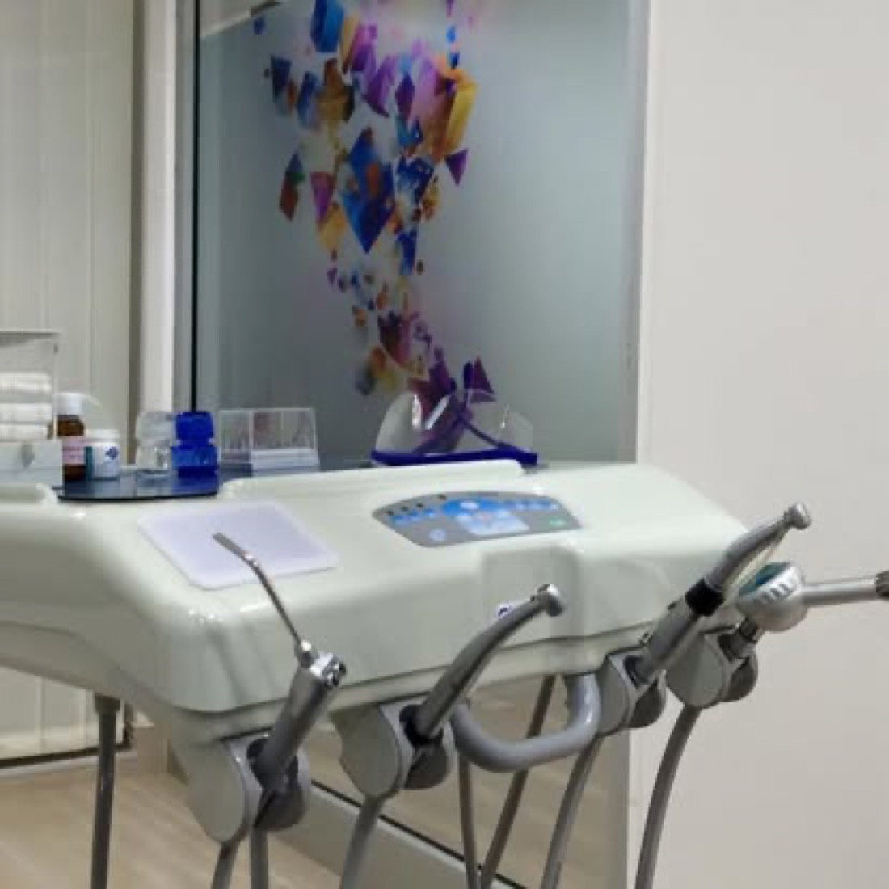
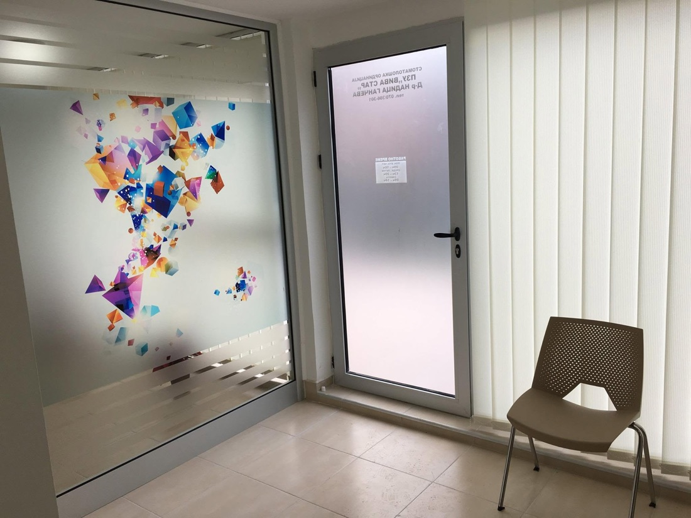

Check-ups & consultations
Regular controls, treatment planning and oral hygiene advice for adults and children.
Dental clinic · Kavadarci, North Macedonia
Complete dental care under one roof: from regular check-ups and fillings to prosthetics, aesthetic dentistry and an in-house dental X-ray — diagnosis and treatment plan in a single visit.
Open Mon · Tue · Thu 09:00–17:00 · Wed · Fri 12:00–20:00

Everything a modern dental practice offers — plus aesthetic dentistry and X-ray diagnostics under one roof.
Regular controls, treatment planning and oral hygiene advice for adults and children.
Aesthetic (white) fillings and painless caries treatment with modern materials.
Root canal treatment — saving the tooth instead of extracting it.
Custom crowns, bridges and dentures for a natural look and comfort.
Professional whitening for a brighter smile, safe for the enamel.
Patience and a gentle approach — a child's first dental visit should be a pleasant one.
Extractions and minor surgical procedures in sterile conditions.
Smile design — veneers, metal-free crowns and whitening for a tailor-made smile. Learn more ↓
X-ray imaging on the spot, in the clinic — accurate diagnosis without a referral elsewhere.
A smile can be designed. At Viva Star we do a smile analysis and build an aesthetic plan tailored to you — from professional whitening to veneers and metal-free crowns — with on-site X-ray diagnostics, all in one visit.

A modern, bright and sterile practice on Blvd. Makedonija in Kavadarci, led by Dr. Nadica V'chkova.


Yes — call +389 70 396 301 to book. For acute pain we do our best to see you the same day.
Yes. We have a dental X-ray on site, so you get your diagnosis and treatment plan in the same visit.
Yes — pediatric dentistry is our everyday work — a gentle approach so the first visit is a pleasant one.
Monday, Tuesday and Thursday 09:00–17:00; Wednesday and Friday 12:00–20:00. Weekends closed (call us for emergencies).
Blvd. Makedonija 3-zh, Kavadarci, North Macedonia. Open in Google Maps.
Blvd. Makedonija 3-zh, Kavadarci
Mon · Tue · Thu: 09:00–17:00
Wed · Fri: 12:00–20:00
Real Google reviews. Been here? Leave a review — it means a lot.
Rate us on Google — your experience helps neighbours choose their dentist.
Open Google reviews